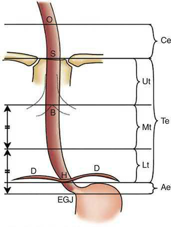
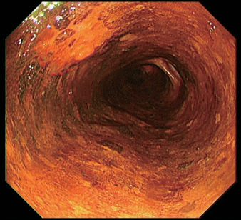
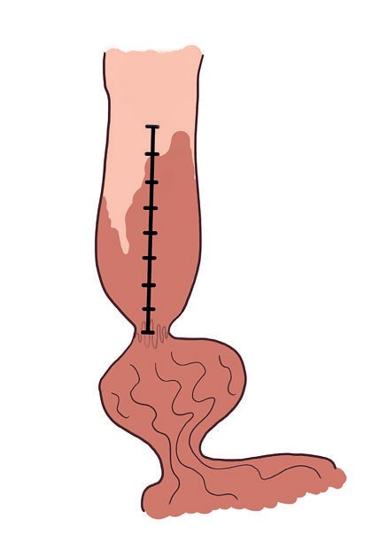
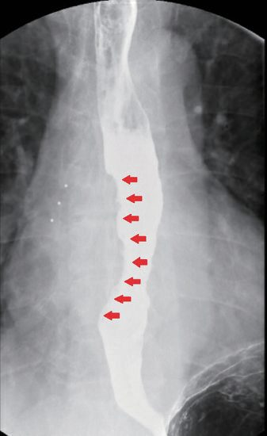
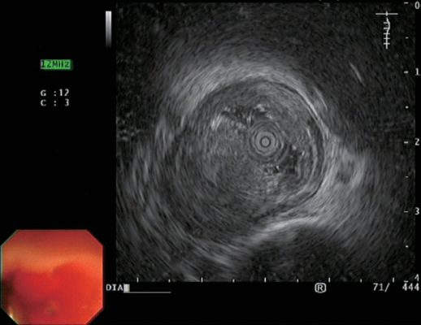
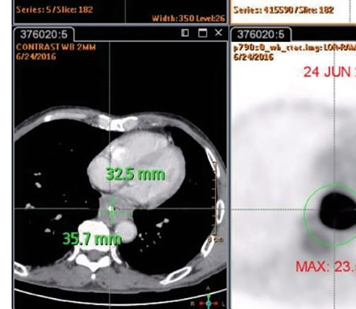
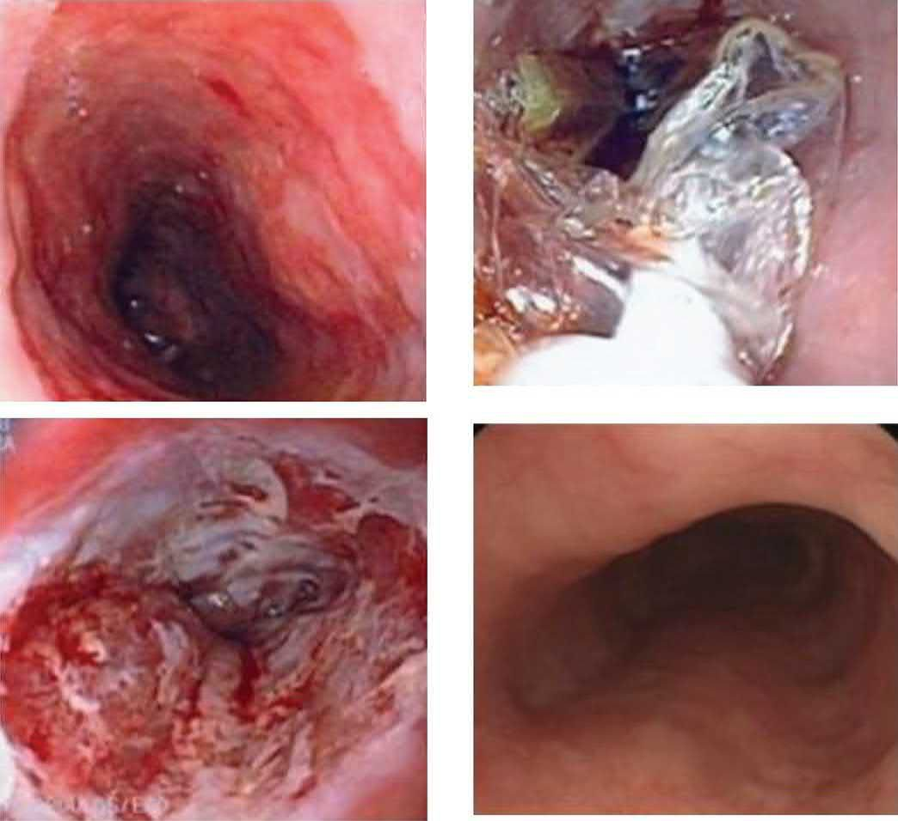

Oesophageal Cancer
Summary
- Oesophageal cancer is the eighth most common cancer worldwide and the sixth most common cause of cancer death, most commonly presenting in the sixth and seventh decades of life [1].
- It is the seventh most common cancer globally, with 604,000 new cases in 2020 accounting for 3.1% of all new cancer diagnoses, and the sixth leading cause of cancer mortality with 544,000 deaths [2].
- Bailey & Love and Sabiston differ by one place on the worldwide incidence rank, eighth versus seventh, but agree it is the sixth leading cause of cancer death.
- Squamous cell carcinoma and adenocarcinoma are the two dominant histological types, with a marked epidemiological shift in Western countries since the 1990s from squamous cell carcinoma to adenocarcinoma, the latter now surpassing the former in incidence [1].
- Overall prognosis is poor, driven by late presentation and early lymphatic/systemic spread, but early diagnosis and R0 resection offer the best chance of cure [1].
UK practice is governed by three NICE guidelines that divide the disease by stage. NG12 sets the suspected-cancer referral thresholds; NG231 covers Barrett's oesophagus and stage 1 adenocarcinoma, where treatment is endoscopic and staging is deliberately minimal; and NG83 covers everything from locally advanced disease onwards, including radical treatment, palliation and follow-up [3][4][5].
![The two NICE staging and treatment tracks, which are deliberate opposites. Track 1, suspected stage 1 adenocarcinoma (NG231): stage using endoscopic resection (1.4.1), do not use CT before endoscopic resection for suspected T1, and do not use endoscopic ultrasound before endoscopic resection for suspected T1a (1.4.2, 1.4.3); offer endoscopic resection as first-line treatment for T1a and then ablate any residual Barrett's (1.6.2, 1.6.3); offer oesophagectomy for T1b in people fit for surgery and at high risk of progression (1.6.5). Track 2, locally advanced disease (NG83): offer F-18 FDG PET-CT to people suitable for radical treatment, except T1a tumours (1.3.1); do not offer endoscopic ultrasound only to distinguish T2 from T3 tumours (1.3.2); ensure curative resections are done in a specialist surgical unit by specialist oesophago-gastric surgeons (1.2.3); and consider a two-field lymph node dissection at curative oesophagectomy (1.4.7). The contrast is the point, early disease is staged by resection with imaging avoided, while locally advanced disease is staged by imaging with endoscopic ultrasound restricted](../assets/infographics/oesophageal-cancer-uk-staging.webp)
Definition
Oesophageal tumours are almost always malignant, with early invasion of regional nodes and rapid submucosal lymphatic spread, so disease is often advanced at diagnosis [6]. The two principal histological types are squamous cell carcinoma, predominant worldwide and typically found in the cervical/upper two-thirds of the oesophagus, and adenocarcinoma, now the number one oesophageal cancer in the West, usually arising in the lower third from Barrett's metaplasia [6][7].
| Feature | Adenocarcinoma | Squamous cell carcinoma |
|---|---|---|
| Epidemiology | Most common in North America and Western Europe | Most common worldwide |
| Sex predilection | Male | Male |
| Key risk factors | GERD, obesity | Tobacco, alcohol |
| Pathogenesis | Glandular differentiation | Squamous dysplasia |
| Location | 80% in distal oesophagus or oesophagogastric junction | Middle third 50%, lower third 40%, upper third 10–20% |
Table reproduces the comparison of the two predominant subtypes [2].

Pathophysiology
Both squamous cell and adenocarcinoma arise from dysplastic mucosa; most adenocarcinomas are mucin-producing with intestinal-type features [1].
Squamous carcinogenesis
Squamous cell carcinoma arises from the squamous lining in the setting of repeated toxin exposure and chronic inflammation, progressing through squamous dysplasia to high-grade intraepithelial neoplasia (carcinoma in situ without violation of the basement membrane) and the estimated risk of progression to invasive cancer at 14 years from diagnosis is 24%, 50% and 75% for low-, moderate- and high-grade intraepithelial neoplasia respectively [2]. Early lesions appear plaque-like, erosive or papillary; more advanced ones become fungating, ulcerative or infiltrative [2].
Adenocarcinoma and Barrett metaplasia
- Adenocarcinoma is characterised by glandular differentiation arising in Barrett oesophagus, where normal stratified squamous epithelium of the distal oesophagus is replaced by columnar metaplasia driven by chronic acid exposure; high-grade dysplasia on histopathology is the best predictor of progression to adenocarcinoma, though some patients develop adenocarcinoma without antecedent Barrett's [2].
- Carcinoma is thought to result from accumulated genetic abnormalities including inactivating TP53 mutations with subsequent overexpression of oncogenic drivers such as ERBB2 (HER2), KRAS and CCNE1; TP53 mutation is also the most prevalent genomic aberration in squamous carcinoma [2].
- Cancer Genome Atlas work showed squamous carcinoma of the oesophagus bears a stronger resemblance to HPV-negative head-and-neck squamous carcinoma than to oesophageal adenocarcinoma, while oesophageal adenocarcinoma more closely resembles gastric adenocarcinoma [2].

Lymphatic and distant spread
- The oesophageal wall has a dense submucosal lymphatic plexus that runs longitudinally, with about six times more longitudinal than transverse spread on contrast injection studies, meaning free tumour cells can extend a considerable distance along the submucosa before penetrating the muscularis into regional nodes; in the upper two-thirds flow is mainly cephalad, in the lower third mainly caudad [7].
- The cervical oesophagus has more direct segmental drainage into regional nodes, giving cervical lesions less submucosal spread but more regionalized lymphatic spread [7].
- Lymphatic channels begin in the mucosa and drain into the submucosa forming long collection channels with primarily longitudinal flow, so cervical, supraclavicular and abdominal lymphadenopathy is seen with both upper and lower tumours.
- The incidence of lymphatic spread ranges from 30% to 70%, and the deeper the tumour invasion the higher the likelihood of nodal spread [2].
- Both cell types can directly invade adjacent structures depending on location, trachea/bronchi (haemoptysis, airway obstruction, oesophago-airway fistula), aorta (rare aorto-oesophageal fistula), diaphragmatic crura, or pericardium [1].
- Distant haematogenous spread occurs to non-regional nodes, lungs, liver, brain, and bone; peritoneal metastasis is an important spread route for OGJ adenocarcinoma but rare for squamous cell cancer [1].
- The two most common sites of distant metastasis are liver and lung, with bone, kidney, adrenal glands and brain less common [2].
- Adenocarcinoma classically metastasizes to the liver first; squamous cell carcinoma classically metastasizes to the lung first [6].
Magnitude of the Barrett's risk
- Barrett's oesophagus occurs in approximately 10–15% of patients with GERD, and when followed prospectively the incidence of adenocarcinoma is one in 100 to 200 patient-years, for every 100 patients with Barrett's followed for a year, one develops adenocarcinoma [9].
- Although this appears small, it is at least 40 to 60 times the risk of a similar population without Barrett's, comparable to the lung-cancer risk of a 20-pack-year smoker; surveillance is recommended because there is no reliable evidence that medical therapy removes the risk of neoplastic transformation, and because malignancy in Barrett's is curable if detected early [9].
- Rarely, adenocarcinoma arises in the submucosal glands and forms intramural growths resembling the mucoepidermoid and adenoid cystic carcinomas of the salivary glands [9].
Clinical features
- Progressive dysphagia, initially for solids then progressing to a soft and eventually liquid diet, is the most common symptom, reflecting increasing luminal obstruction [1][6].
- Patients typically report progressive dysphagia over weeks to months, adapting by chewing more thoroughly, avoiding hard foods or drinking liquids with swallows, so they seek attention only once dysphagia has worsened significantly, by which point most have also lost weight, and dysphagia usually signifies at least T3 disease [2].
- Anorexia, weight loss, odynophagia, and regurgitation are also common, along with fatigue, retrosternal pain, dyspnoea and anaemia [1][2].
- Hoarseness may indicate recurrent laryngeal nerve involvement; choking and cough on drinking water suggest an oesophago-airway fistula, often with associated haemoptysis [1].
- Chronic blood loss can cause iron-deficiency anaemia; acute bleeding is rarely severe except for aorto-oesophageal fistula, which classically presents with a small sentinel bleed followed by fatal massive haemorrhage [1].
- Malignant dysphagia must be distinguished from benign causes: an impacted foreign body, motility disorders (diffuse oesophageal spasm, non-specific dysmotility, achalasia, or the poor motility of systemic sclerosis, which can itself cause a stricture from failed acid clearance), neurological disease causing oropharyngeal dysmotility (myasthenia gravis, multiple sclerosis, cerebrovascular disease), a reflux-related peptic stricture or Schatzki ring, an oesophageal web (postcricoid web in Plummer-Vinson syndrome, or bullous disease such as pemphigus), and pharyngeal pouch [10].
- Early cancers are usually asymptomatic and detected incidentally at endoscopy except where a screening programme exists [1].
- Early-stage tumours are often discovered during endoscopy for Barrett surveillance; screening for squamous dysplasia is performed in East Asian regions of high incidence, and outside these there are no defined screening programmes [2].
- Physical examination is usually unremarkable, though attention should be paid to supraclavicular and cervical adenopathy, and laboratory evaluation may show anaemia from chronic blood loss, hypoproteinaemia from malnutrition, and hypercalcaemia or abnormal liver function tests with distant spread [2].
- A palpable supraclavicular node from metastatic spread is Virchow's node, and its presence is known as Troisier's sign [11].
- Signs of unresectability/advanced disease include recurrent laryngeal nerve paralysis (hoarseness), Horner syndrome (brachial plexus invasion), persistent spinal pain, phrenic nerve invasion, malignant pleural effusion, and malignant fistula [6][7].
Why dysphagia is a late sign
- Dysphagia presents late in the natural history because the oesophagus has no serosal layer, so its smooth muscle dilates with ease; the symptom becomes severe enough to bring the patient to medical attention only when more than 60% of the circumference is infiltrated, by which point the disease is usually advanced, a tracheo-oesophageal fistula may be present at the first visit and more than 40% of patients have evidence of distant metastases [9].
- Vocal-cord paralysis is most commonly caused by invasion of the left recurrent laryngeal nerve by the primary tumour or nodal metastasis; back pain at diagnosis usually indicates distant metastasis or coeliac encasement; in tumours of the cardia, anorexia and weight loss usually precede the dysphagia; and in high-incidence areas where screening is practised, the most prominent early symptom is pain on swallowing rough or dry food [9].
- Palpable cervical nodes remote from the tumour generally indicate dissemination (often called M1a disease) and other metastatic nodes are rarely palpable but equally ominous, especially the umbilical node in junctional cancer [9].
Aetiology
Aetiological factors differ by histological subtype [1].
Squamous cell carcinoma
- The strongest risk factors are tobacco and alcohol, which act synergistically to give a threefold increased risk, with relative risk rising with the amount consumed; the disease is three to four times more prevalent in males [2].
- Risk factors also include hot beverages, N-nitroso-containing foods (pickled vegetables), betel nut chewing, yerba mate consumption, dietary deficiency of fresh fruit/vegetables and micronutrients, low socioeconomic status, history of mediastinal radiation, lye corrosive stricture, prior upper aerodigestive malignancy, Plummer-Vinson syndrome, and achalasia, with a genetic component in alcohol handling, aldehyde dehydrogenase 2 (ALDH2) deficiency, common in East Asians, leads to acetaldehyde accumulation [1][6].
- Disorders producing a chronic inflammatory state (achalasia, Plummer-Vinson syndrome, caustic ingestion) increase risk, and human papillomavirus accounts for only a small subset with unclear clinical implications [2].
- Tylosis (RHBDF2 mutation, autosomal dominant, with palmoplantar hyperkeratosis) carries a 70% lifetime risk of squamous cell oesophageal cancer, warranting endoscopic screening from age 20; Fanconi anaemia also predisposes to squamous cell carcinoma of the oral cavity and oesophagus [2][6].
Adenocarcinoma
- Adenocarcinoma is strongly associated with GERD, obesity, and Barrett's oesophagus, and its rising incidence parallels rising obesity and GERD/Barrett's prevalence in Western populations; GERD affects up to 44% of the US population, of whom 5–8% develop Barrett's oesophagus, with an estimated 0.2–0.5% per year rate of neoplastic transformation [1][7].
- Tobacco use is also a risk factor, and Helicobacter pylori infection is inversely correlated [2].
- Patients with other aerodigestive malignancies carry particularly high risk from shared environmental carcinogen exposure; roughly 10% of oesophageal cancer patients have multiple primary cancers, 70% of these in the aerodigestive tract [1].
The global burden varies considerably by geography, with the highest incidence in the central Asian "oesophageal cancer belt" spanning Iran, the central Asian republics and China, followed by Southern and Eastern Africa and Northern Europe. Approximately 70% of cases occur in males, with a twofold to threefold difference in incidence and mortality between the sexes [2].
Geographic variation in squamous carcinoma
The incidence of squamous carcinoma ranges from about 20 per 100,000 in the United States and Britain to 160 per 100,000 in parts of South Africa and the Henan Province of China, and 540 per 100,000 in the Guriev district of Kazakhstan; the environmental factors behind these high-incidence pockets have not been conclusively identified, though additives to local foodstuffs (nitroso compounds in pickled vegetables and smoked meats) and zinc and molybdenum deficiency have been suggested [9]. Cervical oesophageal tumours account for an estimated 8% of primary malignancies (against 3% upper thoracic, 32% middle thoracic, 25% lower thoracic and 32% cardia), are almost always squamous (a rare adenocarcinoma arising from a congenital inlet patch) and represent a separate entity because they are more common in women and because the cervical oesophagus drains directly to the paratracheal and deep cervical or internal jugular nodes with minimal longitudinal flow, so intrathoracic nodes are rarely involved except in advanced disease [9].
Diagnosis
Endoscopy and biopsy
- Diagnosis is made by endoscopy with biopsy confirmation, and tissue diagnosis is mandatory to determine histological subtype and for molecular characterisation; endoscopy should be performed in any patient presenting with dysphagia even if an oesophagram suggests a motility disorder [2].
- Cancers appear as friable ulcerated masses or strictures, but early-stage tumours may appear only as ulcerations, small nodules or flat mucosal irregularities, and a single biopsy may not be diagnostic, so multiple biopsies should be taken from any suspicious lesion [2].
- Barium contrast study may show an ulcerated or stenotic lesion with proximal dilatation [1].
- During endoscopy it is essential to record the tumour's location relative to the incisors and the oesophagogastric junction, its length, and the degree of obstruction, along with the extent of any Barrett's segment according to the Prague criteria [2].



For early squamous dysplasia/cancer, chromoendoscopy with Lugol's iodine (normal mucosa stains brown, dysplastic/cancerous mucosa remains unstained) and narrow-band imaging with the intraepithelial papillary capillary loop (IPCL) classification aid detection [1]. Assessment of the rest of the oesophagus, pharynx, and larynx (including vocal cord movement) is needed to exclude synchronous tumours; bronchoscopy is required for mid/upper oesophageal tumours near the airway to exclude airway invasion, which would contraindicate oesophagectomy [1][2].

Staging investigations
- Endoscopic ultrasound (EUS) is the most accurate test for assessing T stage, distinguishing the oesophageal wall layers (5 alternating hyper/hypoechoic layers), with average accuracy of 85% for T stage and 75% for N stage; EUS-FNA obtains cytological confirmation of suspicious nodes [1][7].
- EUS is superior to CT or PET for both T and N status and is highly accurate for coeliac nodal status, though obstructing lesions may preclude assessment, and dilating to allow EUS carries a perforation risk; since most tight stenoses represent locally advanced disease that will receive neoadjuvant therapy regardless, practitioners may forego EUS in that situation [2].
- For superficial tumours (T1a–T2) the accuracy of EUS is significantly diminished and endoscopic mucosal resection provides the most accurate staging information [2].

CT chest/abdomen is the best single test for assessing resectability and detecting distant nodal/metastatic disease, though it is less accurate than EUS for local nodal staging [1][6]. PET-CT detects regional/distant metastases and has prognostic value based on FDG uptake and response to neoadjuvant treatment, though it cannot define oesophageal wall layers for T staging; squamous cell cancers are usually FDG-avid, while OGJ adenocarcinomas may show limited FDG uptake regardless of tumour volume [1].

For nodal assessment the three imaging modalities perform similarly, with moderate accuracy, low sensitivity and high specificity, which is why histological confirmation by EUS-guided fine-needle aspiration is strongly recommended [2].
| Modality | Accuracy for N stage | Sensitivity | Specificity |
|---|---|---|---|
| Endoscopic ultrasound | 66% | 42% | 91% |
| CT | 63% | 35% | 93% |
| PET | 68% | 35% | 87% |
| EUS-guided FNA | Highest of the four | 92% | 93% |
Table reproduces the reported nodal staging performance above; EUS-FNA also has a positive predictive value of 100% and negative predictive value of 86% [2]. Contrasted CT of the chest and abdomen detects distant metastasis with low sensitivity (37–66%), whereas FDG-PET/CT has higher sensitivity (69%), specificity (93%) and overall accuracy (84%), albeit with a risk of false positives, and cytological or histopathological confirmation of M1 disease is recommended [2].
- Diagnostic laparoscopy is useful for staging adenocarcinoma, especially at the OGJ, but not for squamous cell cancer [1].
- Preoperative FEV1 is the pulmonary function test most heavily correlated with ability to tolerate oesophagectomy; FEV1 <1.25 L confers a 40% four-year risk of death from respiratory insufficiency, and observed stair-climbing (three flights without stopping) is a practical bedside surrogate for cardiopulmonary reserve [7].
- Cardiopulmonary exercise (CPEX) testing is a further physiological staging investigation, vital for assessing cardiorespiratory fitness before radical surgery is considered, with anaerobic threshold and peak VO2 the key variables [13].
Refer using a suspected cancer pathway referral for oesophageal cancer if the person has dysphagia, or is aged 55 and over with weight loss together with upper abdominal pain, reflux, or dyspepsia. Consider non-urgent direct-access endoscopy in people with haematemesis, and in those aged 55 or over with treatment-resistant dyspepsia, upper abdominal pain with low haemoglobin, or a raised platelet count or nausea or vomiting with any of weight loss, reflux, dyspepsia or upper abdominal pain [3].
For confirmed oesophageal or junctional cancer suitable for radical treatment, offer F-18 FDG PET-CT except for T1a tumours; do not offer endoscopic ultrasound only to distinguish between T2 and T3 tumours; offer EUS only if it will help guide ongoing management; and consider staging laparoscopy only if it will help guide ongoing management [5]. This is the reverse of the pattern NICE sets for gastric cancer, where laparoscopy is universal and PET-CT selective.
For suspected stage 1 adenocarcinoma the UK approach is deliberately minimal, staging by resection rather than by imaging [4]:
- Offer endoscopic resection for staging to people with suspected stage 1 oesophageal adenocarcinoma (1.4.1).
- Do not use CT before endoscopic resection for staging suspected T1 oesophageal adenocarcinoma (1.4.2).
- Do not use EUS before endoscopic resection for staging suspected T1a oesophageal adenocarcinoma (1.4.3).
- Consider EUS for nodal staging in suspected or confirmed T1b adenocarcinoma (1.4.4).
How EUS and PET drive the decision
- EUS determines the depth of wall penetration and the presence of nodal metastases with about 80% accuracy, and a curative resection should be encouraged when it shows the tumour has not invaded adjacent organs (T4b) and fewer than six enlarged nodes are imaged [9].
- EUS cannot, however, distinguish cancer confined to the mucosa (T1a) from cancer invading the submucosa (T1b), and it is this distinction that decides between endoscopic mucosal resection and oesophagectomy, because positive nodes are found in 20–25% of tumours limited to the mucosa and submucosa [9].
- A PET-active focus corresponding to a mass on CT outside the field of resection should be biopsied before resection; the most common metastatic sites are lung, liver and peritoneal surfaces including the omentum and small-bowel mesentery [9].
- An early metabolic response on PET after chemoradiotherapy improves prognosis whether or not resection follows, whereas a PET-avid tumour that shows no change after 2 weeks of induction is unlikely to benefit from further chemoradiotherapy and can be referred for resection or palliation without the morbidity or expense of a full course [9].
- Thoracoscopic and laparoscopic staging add benefit when the nature of enlarged remote nodes cannot be determined or advanced imaging is unavailable, and diagnostic laparoscopy with jejunostomy placement may precede induction chemoradiotherapy in a patient with severe dysphagia and weight loss [9].
Scoring and Severity
TNM staging (AJCC/UICC 8th edition): T1a (lamina propria/muscularis mucosae), T1b (submucosa), T2 (muscularis propria), T3 (adventitia), T4a (pleura, pericardium, azygos vein, diaphragm, or peritoneum), T4b (aorta, vertebral body, or airway); N1 (1–2 nodes), N2 (3–6 nodes), N3 (≥7 nodes); M0/M1 [1][2]. High-grade dysplasia is defined by malignant cells confined to the epithelium without penetration of the basement membrane and is by definition non-invasive (Tis) [2].
| Category | Definition |
|---|---|
| Tis | High-grade dysplasia |
| T1a | Invades lamina propria or muscularis mucosae |
| T1b | Invades submucosa |
| T2 | Invades into but not beyond the muscularis propria |
| T3 | Invades the adventitia |
| T4a | Invades resectable adjacent structures (diaphragm, pleura, azygos vein, peritoneum, pericardium) |
| T4b | Invades usually unresectable structures (aorta, vertebral body, trachea) |
| N1 / N2 / N3 | 1–2 / 3–6 / 7 or more regional nodes |
| G1 / G2 / G3 | Well / moderately / poorly differentiated or undifferentiated |
Table reproduces the 8th-edition categories [2].
Features unique to the 8th edition
- The 8th edition acknowledges the differing biology of the two histologies by creating separate stage groupings for each, and is the first edition to separate staging into clinical (cTNM), pathological (pTNM) and post-neoadjuvant pathological (ypTNM) groups [2].
- Survival of early- and intermediate-stage patients is worse for squamous carcinoma than adenocarcinoma, and tumour location affects pathological stage for squamous carcinoma but not adenocarcinoma; location is defined by the distance from the incisors to the tumour epicentre [2].
- Tumour grade is included in the pathological stage for early tumours of both histologies because it predicts survival, though poorly differentiated or signet ring cell morphology (G3) is the grade most clearly associated with poorer outcome [2].
- Tumours with an epicentre within 2 cm of the cardia are staged as oesophageal; those extending further distally (Siewert type III in the Siewert classification of junctional tumours) are staged and treated as gastric cancers [1][2].
- Cervical (up to 5 cm below the cricopharyngeus) and EGJ tumours (up to 5 cm below the EGJ) are staged and treated similarly to thoracic oesophageal cancer [6].
- Nodal disease outside the field of resection (supraclavicular or coeliac nodes) is considered M1 disease and a contraindication to esophagectomy [6].
Staging by endoscopic ultrasound
On EUS the wall appears as alternating hyperechoic and hypoechoic layers with tumours hypoechoic; the fourth layer is the key landmark, a hypoechoic cancer is cT1 without invasion of the fourth layer, cT2 with invasion into it, cT3 beyond it, and cT4 if the fifth layer is invaded [2]. T3–T4 cancers carry a very high (>80%) probability of nodal spread and require neoadjuvant therapy, whereas T1–T2 cancers are likely N0 and can be treated with up-front resection [2].
Tumour length is prognostic: tumours >8 cm should generally be excluded from curative resection, those <4 cm have the most favourable features, and nodal spread is the single most important prognostic factor in patients without systemic metastases [6][7].
Clinical staging and fitness criteria for curative resection
- Clinical factors that indicate advanced disease and exclude surgery with curative intent are recurrent laryngeal nerve paralysis, Horner's syndrome, persistent spinal pain, diaphragmatic paralysis, fistula formation and malignant pleural effusion; factors that make cure unlikely are a tumour longer than 8 cm, an abnormal oesophageal axis on barium radiography, more than four enlarged nodes on CT, weight loss of more than 20% and loss of appetite [9].
- Resection for cure in a patient over 80 is rarely indicated because of the added operative risk and shorter life expectancy, although octogenarians with high performance status and excellent cardiopulmonary reserve may be candidates [9].
- The FEV1 should ideally be 2 L or more; a patient with an FEV1 below 1.25 L is a poor candidate for thoracotomy, carrying a 40% risk of dying from respiratory insufficiency within 4 years, and transhiatal oesophagectomy should be considered for poor pulmonary reserve [9].
- Clinical evaluation and ECG are insufficient measures of cardiac reserve, echocardiography and dipyridamole-thallium imaging give accurate information on wall motion, ejection fraction and myocardial blood flow, a thallium defect may need coronary angiography, and a resting ejection fraction below 40% that does not rise with exercise is an ominous sign; most patients who can climb three flights of stairs without stopping will do well with two-field open oesophagectomy, especially with an epidural [9].
- Nutritional status is the factor most predictive of postoperative complications: weight loss of more than 20 lb with hypoalbuminaemia (albumin <3.5 g/dL) carries a much higher rate of complications and mortality, so a feeding tube should be considered before induction chemoradiotherapy, and emerging data suggest 5 days of pretreatment with fish-oil-rich immune-enhancing nutrition reduces cardiac and other complications after oesophagectomy [9].
| Dysphagia grade | Definition | Incidence at diagnosis |
|---|---|---|
| I | Eating normally | 11% |
| II | Requires liquids with meals | 21% |
| III | Able to take semisolids but unable to take any solid food | — |
| IV | Able to take liquids only | 40% |
| V | Unable to take liquids, but able to swallow saliva | — |
| VI | Unable to swallow saliva | 12% |
Table reproduces the functional grades of dysphagia tabulated by Schwartz from Takita's series of 153 squamous cancers [9].
Treatment and Management
Treatment is stage-directed and determined by multidisciplinary team discussion; when distant metastatic disease is present, palliation is the goal [1]. Plans should be individualised to the stage of disease, the patient's age, comorbidities and performance status, and their own wishes, since patients with locally advanced disease must have the reserve to tolerate rigorous neoadjuvant regimens, recover from major surgery and potentially undergo further postoperative therapy [2].
Endoscopic therapy and Barrett management
- Endoscopic mucosal resection (EMR) and endoscopic submucosal dissection (ESD) are curative options for very early cancers confined to the mucosa (T1a, low nodal risk); T1b (submucosal) tumours, especially squamous, carry substantial nodal metastasis risk and are less suited to endoscopic-only treatment [1].
- T1b lesions involving the most superficial third of the submucosa (SM1) have relatively low nodal metastasis rates, possibly under 10%, whereas those in the deeper two-thirds (SM2/SM3) may involve nodes in almost 40% of cases, and T1b squamous cancers carry a higher nodal risk than adenocarcinoma (45% versus 26%), so oesophagectomy is recommended for T1b adenocarcinoma with high-risk features and for T1b squamous carcinoma [2].
- High-grade dysplasia, carcinoma in situ, and select T1a tumours (<2 cm, well/moderately differentiated, node-negative) can be managed by endoscopic resection alone [6].
- Barrett's disease burden is quantified by the Prague C&M criteria and sampled by the Seattle protocol, four-quadrant biopsies every 2 cm through the length of the segment, or every 1 cm where there is a history of dysplasia, plus targeted biopsies of all visible lesions [2].
- Presence of dysplasia requires confirmation by a second pathologist, and the degree of dysplasia is the best current marker of progression risk [2].
- EMR can remove lesions under 2 cm en bloc, larger lesions requiring piecemeal removal that limits margin assessment, whereas ESD allows en bloc dissection regardless of size and is favoured for lesions larger than 15 mm, lesions with poor lifting from fibrosis, and where depth of invasion needs better assessment, at the cost of being labour intensive with greater perforation risk [2].
- EMR successfully eradicates 91% to 98% of T1a cancers, with complications including bleeding (10%), perforation (3%) and stricture formation [2].

| Recommendation | Content |
|---|---|
| 1.3.2 | Offer high-resolution white light endoscopy with Seattle biopsy protocol for surveillance |
| 1.3.3 | Surveillance every 2 to 3 years for long-segment Barrett's (3 cm or longer), and every 3 to 5 years for short-segment (under 3 cm) with intestinal metaplasia |
| 1.3.4 | Tailor frequency within those intervals by the person's age, sex, family history of oesophageal cancer and smoking history |
| 1.3.5 | Do not offer surveillance at all for short-segment Barrett's without intestinal metaplasia, once confirmed at 2 endoscopies |
| 1.2.2 | Do not offer aspirin to prevent progression to dysplasia and cancer |
| 1.8.1 | Do not offer anti-reflux surgery to prevent progression to dysplasia or cancer |
Table reproduces the surveillance and prevention recommendations [4]. Barrett's oesophagus is defined for this purpose as metaplastic columnar epithelium clearly visible endoscopically at least 1 cm above the gastro-oesophageal junction and confirmed histopathologically [4].
For dysplasia, offer endoscopic resection of visible lesions as first-line treatment in high-grade dysplasia, then endoscopic ablation of any residual Barrett's; offer radiofrequency ablation for low-grade dysplasia diagnosed from biopsies at two separate endoscopies, with the histological diagnosis confirmed by two gastrointestinal pathologists; and consider 6-monthly surveillance with dose optimisation of acid suppression for indefinite dysplasia [4].
For stage 1 adenocarcinoma, offer endoscopic resection as first-line treatment for T1a disease followed by ablation of any residual Barrett's, and offer oesophagectomy for T1b disease in people fit for surgery and at high risk of progression, for example incomplete endoscopic resection, or lymphovascular invasion or deep submucosal invasion of more than 500 micron on the resection specimen [4]. Where such a patient is unfit for oesophagectomy, consider radiotherapy alone or with chemotherapy [4].
Multimodal therapy for locally advanced disease
Neoadjuvant chemoradiotherapy improves survival for resectable tumours and can downstage initially unresectable tumours; it is indicated for ≥T2 tumours or node-positive periesophageal disease, and adjuvant chemotherapy also improves survival [6]. Neoadjuvant therapy followed by surgery is the standard of care for resectable locally advanced disease, aiming to downsize tumours, increase local control, improve R0 resection rates and eradicate undetected metastatic disease; the two supported strategies are neoadjuvant chemoradiation and perioperative chemotherapy, with restaging FDG-PET/CT 5 to 8 weeks after completion before surgery [2].
| Trial | Design | Key outcomes |
|---|---|---|
| CROSS (2012) | Carboplatin/paclitaxel with concurrent radiotherapy 41.4 Gy then surgery, versus surgery alone; 75% adenocarcinoma | R0 resection 92% versus 69%; pathological complete response 49% squamous versus 29% adenocarcinoma; median overall survival 49.4 versus 24 months; 5-year survival 47% versus 34% |
| NEOCRTEC (2018) | Vinorelbine/cisplatin with concurrent radiotherapy 40 Gy then surgery, versus surgery alone; squamous only | R0 resection 98.4% versus 91.2%; pathological complete response 43.2%; median overall survival 100.1 versus 66.5 months; 5-year survival 59.9% versus 49.1% |
| MAGIC (2006) | Pre- and postoperative epirubicin, cisplatin, 5-FU versus surgery alone | Improved disease-free survival; 5-year overall survival 36% versus 23% |
| FNCLCC ACCORD 07 (2011) | Pre- and postoperative cisplatin, 5-FU versus surgery alone | 5-year overall survival 38% versus 24%; R0 resection 84% versus 74% |
| UK MRC OEO2 (2002, updated 2009) | Neoadjuvant cisplatin/5-FU then surgery versus surgery alone, 802 patients | R0 resection 60% versus 54%; median survival 16.8 versus 13.3 months; 5-year survival 23.0% versus 17.1%, the first trial to show a significant overall survival benefit from neoadjuvant chemotherapy |
Table reproduces the landmark multimodal trials [2]. CROSS also reduced locoregional recurrence from 34% to 14% and did not adversely affect postoperative health-related quality of life [2].
Because pathological complete response occurs in a substantial proportion after neoadjuvant chemoradiation, and given the morbidity of oesophagectomy, the necessity of resection has been questioned. The SANO trial (2025) randomised patients with a clinical complete response (no tumour on endoscopic biopsy, EUS and PET/CT at 6 and 12 weeks) to active surveillance or oesophagectomy, and found overall survival after active surveillance non-inferior to standard surgery at two years [2].
Radiotherapy, targeted therapy and immunotherapy
- Current standard of care for definitive chemoradiation is at least 50 Gy, with 41.4 to 50.4 Gy combined with chemotherapy recommended for neoadjuvant treatment and a conventional modest dose of 30–35 Gy effective for palliating malignant dysphagia; large trials have not shown better locoregional control with higher doses [2].
- Intensity-modulated radiotherapy and proton-beam therapy substantially reduce irradiation of non-target tissues and are associated with fewer postoperative complications [2].
- Palliative radiation for dysphagia provides only short-lived benefit, typically lasting 2–3 months, and is reserved for patients who are not surgical candidates, often combined with chemotherapy; radiation is also effective for haemorrhage from the primary tumour [7].
- HER2 is the most frequently overexpressed growth receptor, more so in adenocarcinoma (15–30%) than squamous carcinoma (5–13%), and is the target for trastuzumab; trastuzumab deruxtecan is now standard second-line therapy for HER2-positive gastro-oesophageal adenocarcinoma, having improved median overall survival to 12.5 months from 8.4 [2].
- Immune checkpoint inhibitors have greater efficacy against squamous carcinoma than adenocarcinoma, and higher PD-L1 positivity (combined positive score of 10 or more) is associated with improved efficacy [2].
- In the phase III CheckMate 577 trial, patients with residual pathological disease after neoadjuvant chemoradiation and resection who received adjuvant nivolumab had a median disease-free survival of 22.4 months against 11.0 months with placebo [2].
- Unresectable tumours receive definitive chemoradiotherapy; cervical oesophageal cancer is generally treated with definitive chemoradiotherapy rather than surgery, reserving surgery for non-complete responders or salvage [1][6].
- Malignant tracheoesophageal fistula carries a grim prognosis (death within 3 months from aspiration in most cases), and palliative treatment is esophageal stenting [6].
- For palliation of dysphagia, endoluminal self-expanding metal stenting or external beam radiotherapy are used; surgery is no longer indicated for palliation [13].
For localised oesophageal and junctional adenocarcinoma excluding T1N0 tumours going to surgical resection, offer either chemotherapy before, or before and after, surgery, or chemoradiotherapy before surgery, and encourage people to join relevant clinical trials [5]. Offer endoscopic mucosal resection for staging in suspected T1N0 oesophageal cancer [5].
Squamous carcinoma is handled differently, with a genuine choice offered to the patient: for T1bN0 squamous carcinoma offer the choice of definitive chemoradiotherapy or surgical resection, only after the surgeon and oncologist have discussed each option with the person; and for resectable non-metastatic squamous carcinoma offer the choice of radical chemoradiotherapy or chemoradiotherapy before surgical resection [5].
Nivolumab is recommended as an option for adjuvant treatment of completely resected oesophageal or junctional cancer in adults with residual disease after previous neoadjuvant chemoradiotherapy [5].
For non-metastatic disease unsuitable for surgery, consider chemoradiotherapy where the cancer can be encompassed within a radiotherapy field; where it cannot, consider systemic anticancer therapy, local tumour treatment including stenting or palliative radiotherapy, or best supportive care, and after treatment, reassess the response and reconsider whether surgery is an option [5].
For luminal obstruction, offer self-expanding stents for immediate relief of dysphagia, and offer stents or radiotherapy depending on the degree of dysphagia and its impact on nutrition and quality of life, performance status and prognosis [5]. Do not routinely offer external beam radiotherapy after stenting, but consider it for people with prolonged post-interventional bleeding or a known bleeding disorder [5].
Palliation by dysphagia grade
- Palliation is indicated for metastatic disease or T4b invasion in a patient unable to swallow, or for a fistula into the tracheobronchial tree; aorto-oesophageal fistulas are extremely rare and nearly 100% lethal [9].
- Dysphagia grades I–III can often be managed with radiotherapy, usually combined with chemotherapy, definitive chemoradiotherapy when no resection is anticipated, with the dose increased from 45 Gy to 60 Gy over 8 weeks rather than the 4 weeks used for induction; 20% of patients have a complete response that leaves undetectable cancer, though many recur locally or systemically 1–5 years later, and a patient who is disease-free at all sites except the oesophagus after a 12-month wait may be a candidate for salvage oesophagectomy [9].
- For grade IV dysphagia and above, in-dwelling stents are the mainstay: covered removable stents seal fistulas or suit cases where later removal may be wanted, and uncovered expandable metal stents are the choice when large locally invasive or metastatic tumours preclude resection; a stent across the gastro-oesophageal junction causes severe, disabling reflux, so radiotherapy alone may be preferable at that level, with laparoscopic jejunostomy for feeding access [9].
- Radiation alone palliates dysphagia for only 2–3 months, but is effective for haemorrhage from the primary tumour [9].
Rationale and timing of neoadjuvant therapy
- The case for systemic therapy rests on the observation that most patients develop postoperative systemic metastasis without local recurrence, implying undetected micrometastases at diagnosis; epithelial tumour cells have been found in the bone marrow of 37% of patients resected for cure, with a greater prevalence of relapse at 9 months [9].
- Preoperative chemotherapy can also facilitate resection by shrinking the tumour, particularly valuable for squamous tumours above the carina, where it may give a safer margin from the trachea and allow anastomosis to a tumour-free cervical oesophagus just below the cricopharyngeus, since an involved margin at that level usually requires laryngectomy [9].
- The MRC trial's 10% absolute survival benefit at 2 years and the MAGIC trial's benefit with epirubicin, cisplatin and 5-FU made neoadjuvant chemotherapy with one of these regimens the European standard for locally advanced adenocarcinoma, though most failures are still distant and septic and respiratory complications may be commoner after chemotherapy [9].
- A meta-analysis of the 10 randomised trials of neoadjuvant chemoradiotherapy showed a 13% survival advantage, more pronounced for adenocarcinoma than squamous carcinoma, against 7% for chemotherapy alone; the addition of radiation appears to improve local response and the chance of an R0 resection [9].
- Surgery is best timed 6–8 weeks after completing induction, earlier, active inflammation makes resection hazardous and the patient has not recovered; after 8 weeks peri-oesophageal oedema turns to scar and dissection becomes harder [9].
- Complete pathological response rates for adenocarcinoma range from 17% to 24%, and complete responders survive longer, but distant failure remains common [9].
Surgeries
The primary goal of surgery is R0 resection (clear proximal, distal, and lateral margins), consistently associated with the best long-term survival [1]. Oesophagectomy should be offered to all medically fit patients with resectable cancer more than 5 cm from the cricopharyngeus, and enteral nutritional support should be considered for significant dysphagia or weight loss, preferring a jejunostomy over a gastrostomy so the stomach is preserved as a conduit [2].
Operative approaches
Surgical approaches include: left thoracoabdominal incision; the Lewis-Tanner (Ivor Lewis) two-phase approach (laparotomy for gastric mobilisation, then right thoracotomy for oesophageal resection and intrathoracic anastomosis); the McKeown or three-stage (three-hole) oesophagectomy (right thoracotomy, then abdominal and neck incisions for a cervical anastomosis); the left thoracic (Sweet) approach; and transhiatal esophagectomy (cervical and abdominal incisions, blunt mobilisation of the intrathoracic oesophagus without thoracotomy, cervical anastomosis) [1][6].
- The transthoracic Ivor Lewis operation is the most commonly performed oesophageal resection worldwide, allowing visualisation of the entire intrathoracic oesophagus and complete intrathoracic lymphadenectomy.
- It begins abdominally with gastric mobilisation, dissection of coeliac and left gastric nodes, division of the left gastric artery and preservation of the right gastroepiploic as the conduit's blood supply, after which the patient is repositioned for right chest access and the anastomosis is created at or above the azygos vein [2].
- It is inadequate for obtaining an acceptable margin in mid-oesophageal lesions, for which the McKeown three-hole approach is preferred, applicable to tumours anywhere in the oesophagus and placing the anastomosis in the neck [2].
- Transhiatal esophagectomy may have lower morbidity from anastomotic leaks given the cervical anastomosis but may miss some lymph nodes and can be difficult for large tumours, while limiting adequate mediastinal nodal dissection [1][6].
- Avoiding thoracotomy makes it the least invasive approach with shorter operative time and fewer pulmonary complications.
- A randomised trial found no statistically significant difference in median overall, disease-free or quality-adjusted survival against transthoracic resection with extended en bloc lymphadenectomy, though there was a trend toward better 5-year survival with the transthoracic approach, and many experts regard the transhiatal approach as oncologically inadequate and better suited to early-stage tumours [2].

Minimally invasive (VATS/laparoscopic or robotic) approaches are increasingly replacing open surgery, with anastomosis constructed in the chest or neck; the most common complications of an MIS three-field esophagectomy in order are pneumonia, atrial fibrillation, then anastomotic leak [1][7]. Use of minimally invasive oesophagectomy in the United States rose from 38% in 2010 to 57% in 2015, and randomised trials suggest it carries a lower incidence of pulmonary and major complications, shorter hospital stay and faster functional recovery with similar survival to open surgery [2].
- Transhiatal (blunt) oesophagectomy was first performed in 1933 by a British surgeon and popularised by Mark Orringer of the University of Michigan; although it violates the principle of extended radical lymphadenectomy, it has performed as well as more radical procedures in randomised trials and large database analyses [9].
- The mediastinal dissection is done with the fingertips through an enlarged hiatus, so the lower mediastinal and upper abdominal node basins are cleared but nodes above the inferior pulmonary vein are not (though these rarely form an isolated recurrence) and in experienced hands it is the quickest oesophagectomy, intermediate between minimally invasive and Ivor Lewis procedures in complications and recovery [9].
- Minimally invasive transhiatal oesophagectomy, first performed by Aureo DePaula in Brazil, uses five or six upper abdominal incisions and a transverse cervical incision, a vein-stripping "inversion" technique to deliver the oesophagus from behind the pulmonary vessels and tracheal bifurcation, a greater-curvature gastric conduit on the right gastroepiploic artery with Kocherisation and optional pyloroplasty, and a cervical end-to-side stapled or hand-sewn anastomosis; retrograde stripping is reserved for high-grade dysplasia, antegrade stripping for small junctional cancers, and its main complication is a self-limited anastomotic leak that usually heals in 1–3 weeks [9].
- For the earliest lesions a vagal-sparing variant separates the vagal trunks from the oesophagus at the diaphragm and keeps the vagus and left gastric pedicle intact, but this dissection provides no nodal staging and is inadequate for anything beyond high-grade dysplasia or intramucosal cancer [9].
- In the minimally invasive three-field operation the patient is in the left lateral position with double-lumen intubation, videoscopic access in the mid-axillary ninth intercostal space and a mini-thoracotomy at about the sixth; the azygos vein is divided, upper, middle and lower posterior mediastinal and hilar nodes are harvested, and the thoracic duct is divided at the diaphragm and removed with the specimen before the abdominal and cervical phases, with great care to avoid stretching the recurrent laryngeal nerve [9].
- The two-field variant does the abdomen first, then divides the oesophagus 10 cm above the tumour through a right thoracoscopy and creates a circular-stapled intrathoracic anastomosis; a cervical anastomosis is safer if it leaks, whereas a high thoracic one minimises the risk to neck structures and leaks less often but with more septic consequence, and in many series pneumonia is the commonest complication, atrial fibrillation second and anastomotic leak third [9].
- The Ivor Lewis en bloc resection begins with an upper midline laparotomy and node dissection around the coeliac axis and its branches into the porta hepatis and along the splenic artery to the tail of the pancreas, removed en bloc with the lesser curvature, followed by an anterolateral sixth-space thoracotomy in which the posterior mediastinum is entirely cleared including the thoracic duct, peri-aortic tissue and the peribronchial, hilar and tracheal stations; a Sloan-Kettering study showed a direct relationship between the number of negative nodes harvested and long-term survival, although extended resection may also be a surrogate for experienced surgeons in great institutions [9].
- Being the most radical dissection it carries the most complications, pneumonia, respiratory failure, atrial fibrillation, chylothorax, anastomotic leak, conduit necrosis, gastrocutaneous fistula, hoarseness with aspiration if dissection strays near the recurrent nerves, and rarely tracheobronchial fistula, yet in many single-centre series and retrospective reviews it gives the greatest survival [9].
- Japanese three-field open oesophagectomy yields node counts of 45–60, which most Western surgeons question when a survival advantage is hard to define, although high intrathoracic cancers probably deserve such an approach if cure is the goal [9].
Reconstruction and lymphadenectomy
- Reconstruction is most commonly with a gastric conduit (right gastroepiploic artery blood supply, dividing left gastric and short gastric vessels), and requires a pyloromyotomy/pyloroplasty; colonic interposition (right ileocolon, or left/transverse colon) is used when the stomach is unavailable, requiring three anastomoses and useful in young patients wishing to preserve gastric function or those with prior gastric resection [1][6].
- In some centres, selected patients at high risk of conduit ischaemia undergo preoperative embolisation of the right gastric, left gastric and splenic arteries as gastric conditioning [2].
- Pyloric drainage is not universally practised, since its benefit is confined to the early postoperative period; colon interposition carries more blood loss, a longer operating time and a higher leak rate than a gastric conduit; and where the stomach cannot be used, jejunal options include a Roux-en-Y configuration, which prevents bile reflux, and the Merendino procedure, a jejunal interposition between oesophagus and proximal stomach after limited distal resection [8].
| Reconstruction decision | Finding |
|---|---|
| Pyloroplasty vs no drainage | 13% of patients without a pyloroplasty had gastric-emptying problems in one randomised trial; a meta-analysis found drainage reduces early stasis without affecting long-term function |
| Colon interposition ischaemia | 2.4% in one series, favourable against a 3–10% literature range |
| Conduit route (cervical anastomosis) | Orthotopic (posterior mediastinal), retrosternal, or subcutaneous; retrosternal is 2–3 cm longer but carries similar/increased cardiopulmonary morbidity and more gastric retention, while orthotopic may better preserve nutritional status |
Table reproduces the reconstruction trial and series data above [8].

A cervical anastomosis permits more extensive oesophageal resection, possibly avoids thoracic access, and produces less severe reflux, and a neck leak is easier to control; a thoracic anastomosis may carry a lower leak rate from less tension, a lower stricture rate and less risk of left recurrent nerve injury [2]. In the era of minimally invasive surgery a randomised trial showed much lower leak rates with intrathoracic (12.3%) than cervical (31.7%) anastomosis in transthoracic minimally invasive oesophagectomy for mid-to-distal and junctional tumours [2].
- Lymphadenectomy extent is described by "fields": two-field (mediastinum plus upper abdomen/coeliac trifurcation) with standard/extended/total mediastinal sub-classifications based on paratracheal and recurrent laryngeal nerve nodal dissection, and three-field dissection adding bilateral cervical lymphadenectomy, generally favoured for squamous cell cancers and selected upper thoracic tumours given the propensity for bilateral recurrent laryngeal nerve nodal metastasis [1].
- The number of nodes removed is an independent predictor of survival, and thorough dissection to achieve at least 15 nodes for pathological examination is recommended in patients undergoing resection with or without preoperative therapy [2].
- Esophagectomy requires 6–8 cm margins per the ABSITE Review [6].
- Three-field lymphadenectomy as practised in Japan carries low hospital mortality at experienced centres but substantial morbidity, most notably recurrent laryngeal nerve injury in more than half of patients, which predisposes to pulmonary complications and impairs long-term quality of life [8].
- An "efficacy index", the incidence of metastasis to a nodal region multiplied by the 5-year survival of patients with metastasis there, has been proposed to select which regions are worth dissecting, and found cervical lymphadenectomy high-yield for upper/middle-third tumours but low-yield for lower-third tumours [8].
| Three-field lymphadenectomy | Rate |
|---|---|
| Hospital mortality (experienced centres) | ~4% |
| Septic complications | 26.8% |
| Pulmonary complications | 21.3% |
| Recurrent laryngeal nerve injury | >50% |
Table reproduces the morbidity series above [8]. Leiomyoma, the most common benign oesophageal tumour, is treated by enucleation preserving the mucosa [7].
Hospital volume
Oesophagectomies should be done at high-volume centres: a 2002 study found mortality ranging from single digits at high-volume centres to above 20% at low-volume centres, and a follow-up in 2011 found that just over 30% of oesophagectomies had moved to high-volume centres, with an associated 11% decrease in surgical mortality [2].
Ensure curative oesophago-gastric resections are done in a specialist surgical unit by specialist oesophago-gastric surgeons, and review the treatment of everyone with confirmed oesophago-gastric cancer in a multidisciplinary meeting that includes an oncologist and a specialist radiologist with an interest in the disease [5].
Consider an open or minimally invasive (including hybrid) oesophagectomy for surgical treatment of oesophageal cancer; NICE does not prefer one over the other [5]. Consider two-field lymph node dissection when performing a curative oesophagectomy [5]. Note this is a lower nodal threshold than the three-field dissection favoured in some centres for squamous carcinoma.
Offer nutritional assessment and tailored specialist dietetic support before, during and after radical treatment, and offer immediate enteral or parenteral nutrition after surgery to people having radical surgery for oesophageal and junctional cancers [5].
Resection margins, R0 and the choice of operation
- About the only area of complete agreement is that oesophagectomy should not be performed if an R0 resection is impossible, that is, if the surgeon cannot remove all involved nodes and secure tumour-free radial, oesophageal and gastric margins [9].
- Because GI tumours spread long distances submucosally and longitudinal lymph flow produces skip foci above the primary, wide resection matters: Wong showed that a 10-cm margin of normal oesophagus above the tumour prevents anastomotic recurrence, and that 50% of local recurrences after curative resection occur in the intrathoracic stomach along the gastric resection line, because there is no submucosal lymphatic barrier at the cardia [9].
- Given an oesophageal length of 17–25 cm and a lesser curvature of about 12 cm, a curative resection for distal oesophageal or cardia cancer therefore requires cervical division of the oesophagus and a proximal gastrectomy of more than 50% in most patients [9].
- Cervical oesophageal cancer is frequently unresectable through early invasion of larynx, great vessels or trachea, and although oesophagolaryngectomy is occasionally performed, its morbidity makes stereotactic radiation with concomitant chemotherapy the most desirable treatment for most patients [9].
- Mid-oesophageal tumours are usually squamous with nodal spread that may skip between thorax, neck and abdomen, and most surgeons believe they should be resected under direct vision by thoracoscopy or thoracotomy; abdominal nodal metastases from a mid-thoracic cancer are generally considered incurable, though emerging data suggest isolated cervical nodal disease can be resected with benefit [9].
Endoscopic mucosal resection technique
- Sub-centimetre nodules in a Barrett's segment should be resected in their entirety because they often harbour adenocarcinoma; EMR is performed on every nodule, T staging follows histologically, and this dictates the need for oesophagectomy [9].
- The area beneath the nodule is infiltrated with saline through a sclerotherapy needle, the nodule is drawn into a suction cap on the endoscope tip and snared, or a rubber band is deployed and the snare applied above it; the resection is complete if the tumour is confined to the mucosa with negative margins, whereas a positive margin or submucosal involvement warrants oesophagectomy [9].
- Because these patients are at high risk of further small nodular carcinomas elsewhere in the Barrett's segment, surveillance every 3–6 months must continue indefinitely, or radiofrequency ablation of the remaining high-grade dysplasia may be considered once surveillance biopsies show no further cancer; EMR should not be used when there is any suspicion of mediastinal or abdominal lymphadenopathy [9].
Salvage oesophagectomy and comparative evidence
- Salvage oesophagectomy after failed definitive chemoradiotherapy (typically where systemic therapy has cleared distant disease but the primary persists) is usually done by an open two-field approach after a period of observation; one in four such patients is disease-free at 5 years despite residual cancer in the specimen, but radiation scarring makes it the most technically challenging oesophagectomy [9].
- In the 7-year follow-up of the Dutch trial of transthoracic en bloc against transhiatal resection for junctional and lower oesophageal cancer, the more extensive dissection showed no overall benefit despite higher morbidity and mortality, though the subgroup with one to eight positive nodes appeared to gain longevity; in a SEER database analysis transhiatal resection had better long-term survival that disappeared after adjustment for stage, with lower morbidity and mortality [9].
- A European multicentre randomised trial of open versus minimally invasive oesophagectomy showed a highly significant reduction in pulmonary complications with the minimally invasive approach and no difference in procedure-related mortality [9].
Complications
- Oesophagectomy is a complex procedure associated with major morbidity in 30% to 40% of patients, though 30-day and in-hospital mortality have steadily declined from 8–10% in the 1990s to 2–4% currently [2].
- Atelectasis and pneumonia are common and managed with chest physiotherapy, analgesia, and antibiotics; atrial fibrillation occurs in around 15–20% of patients and, while usually benign, may signal an underlying complication such as anastomotic leak or conduit ischaemia and should prompt investigation [1].
- Recurrent laryngeal nerve injury occurs with superior mediastinal or neck nodal dissection, causing hoarseness, less effective coughing, and aspiration risk [1].
- Gross conduit ischaemia typically presents within 2–3 days postoperatively and may require takedown, drainage, and staged reconstruction [1].
Anastomotic leaks (thoracic or cervical) usually present within the first week with sepsis and abnormal drain output, diagnosed by water-soluble contrast study or careful endoscopy; small contained leaks may be managed with CT-guided drainage or an endoluminal vacuum sponge, while larger septic leaks require exploration; a postoperative contrast study is often obtained around postoperative day 7 to check for leak [1][6]. Management depends on the anastomosis location, the patient's stability and the severity of dehiscence: a cervical anastomosis can be managed with bedside neck washout and negative-pressure therapy, a small thoracic leak can be covered with a stent, and a larger breakdown may require reoperation [2].
- Chylothorax presents as milky/clear, lymphocyte- and triglyceride-rich chest drainage; low-output leaks (<0.5–1 L/day) are managed conservatively (NPO, TPN, medium-chain triglyceride diet) for 1–3 weeks, while output >1–2 L/day or persistent leaks warrant thoracic duct ligation (low, right-sided in the mediastinum) or percutaneous embolization [1][6].
- Anastomotic stricture is a late complication presenting with dysphagia and can generally be managed with endoscopic balloon dilation [2][6].
- Overall surgical mortality is under 5% in dedicated high-volume centres [1].
Enhanced recovery
Enhanced recovery or fast-track programmes have produced fewer intensive care days, shorter length of stay, reduced costs and fewer complications, and there is growing interest in prehabilitation programmes of preoperative exercise and nutrition; prospective studies show most patients return to baseline quality of life about 1 to 3 years after oesophagectomy [2].
Prognosis
- Overall prognosis remains poor, largely due to late presentation and early metastatic spread [1].
- Because early disease is asymptomatic, most patients are diagnosed at an advanced stage: at diagnosis 33% have regional nodal spread and 38% distant disease, with early-stage disease found in only 18% [2].
- Five-year overall survival rose between 1973 and 2010 from 3.6% to 21.1% for squamous carcinoma and from 5.4% to 24.2% for adenocarcinoma, but remains only approximately 20% overall [2].
- Oesophagectomy is curative in only about 20% of resected patients per the ABSITE Review [6].
- With modern multimodality treatment (surgery plus neoadjuvant/adjuvant chemo- or chemoradiotherapy), a 5-year survival rate of 40–50% is achievable; disease stage and the ability to achieve R0 resection are the most powerful outcome predictors [1].
- Nodal spread is the most important prognostic factor in patients without systemic metastases [6].
- Tumours >8 cm in length essentially preclude curative resection [7].
- UK follow-up after curative treatment is symptom-triggered rather than routine.
- Provide information about the symptoms of recurrent disease and what to do if they develop, and offer rapid access to the oesophago-gastric multidisciplinary team for review if symptoms appear; do not offer routine clinical follow-up or routine radiological surveillance solely to detect recurrent disease [5].
- Offer everyone with oesophago-gastric cancer access to an oesophago-gastric clinical nurse specialist through their multidisciplinary team [5].
Completeness of resection as the dominant determinant
The strongest predictors of outcome are the anatomic extent of the tumour at diagnosis and the completeness of surgical removal: after incomplete resection 5-year survival is 0–5%, whereas after complete resection, independent of stage, it ranges from 15% to 40% according to selection criteria and stage distribution [9]. In early-stage disease only nodal metastasis and depth of wall penetration independently influence prognosis, cell type, differentiation and tumour location, which matter in advanced disease, have no effect after resection for early disease, and patients with five or fewer nodal metastases do better, observations that underpinned Skinner's wall-penetration, lymph-node and distant-metastasis staging system and the 2016 AJCC refinements distinguishing limited adjacent nodal disease from multilevel and remote nodal involvement [9].
References
- Bailey & Love's Short Practice of Surgery, 28th ed., Ch. 66, The oesophagus
- Sabiston Textbook of Surgery, 22nd ed., Ch. 84, Esophageal Cancer
- NICE Guideline NG12: Suspected cancer: recognition and referral (2015, updated 2026), 1.2; 1.2.1, 1.2.2, 1.2.3 www.nice.org.uk
- NICE Guideline NG231: Barrett's oesophagus and stage 1 oesophageal adenocarcinoma: monitoring and management (2023), 1.2.2, 1.3.2–1.3.5, 1.8.1; 1.3–1.7; 1.4.1, 1.4.2, 1.4.3, 1.6.2, 1.6.3, 1.6.5; 1.4.1–1.4.4; 1.5.1–1.5.4; 1.6.2, 1.6.3, 1.6.5; 1.7.1; Terms used in this guideline www.nice.org.uk
- NICE Guideline NG83: Oesophago-gastric cancer: assessment and management in adults (2018, updated 2023), 1.1.1; 1.2.1, 1.2.3; 1.2.3, 1.3.1, 1.3.2, 1.4.7; 1.3.1–1.3.4; 1.3–1.7; 1.4.1; 1.4.2, 1.4.3; 1.4.5; 1.4.6; 1.4.7; 1.4.8; 1.5.1–1.5.3; 1.5.20, 1.5.21; 1.5.22, 1.5.23; 1.6.1, 1.6.2; 1.7.1, 1.7.2 www.nice.org.uk
- The ABSITE Review, 2022, Ch. Esophagus
- Schwartz's Principles of Surgery: ABSITE and Board Review, Ch. 25, The Esophagus and Diaphragmatic Hernia
- Maingot's Abdominal Operations, 13th ed., Ch. 26, Cancer of the Esophagus
- Schwartz's Principles of Surgery, 11th ed., Ch. 25, Esophagus and Diaphragmatic Hernia
- Browse's Introduction to the Symptoms and Signs of Surgical Disease, 6th ed., Ch. 15, The abdomen
- Browse's Introduction to the Symptoms and Signs of Surgical Disease, 6th ed., Ch. 12, The neck
- Bailey & Love's Short Practice of Surgery, 28th ed., Ch. 8
- Oxford Handbook of Clinical Surgery, 5th ed., Ch. 8
- Maingot's Abdominal Operations, 13th ed., Ch. 23, Gastroesophageal Reflux Disease, Hiatal Hernia, and Barrett
- Maingot's Abdominal Operations, 13th ed., Ch. 27, Surgical Procedures to Resect and Replace the Esophagus